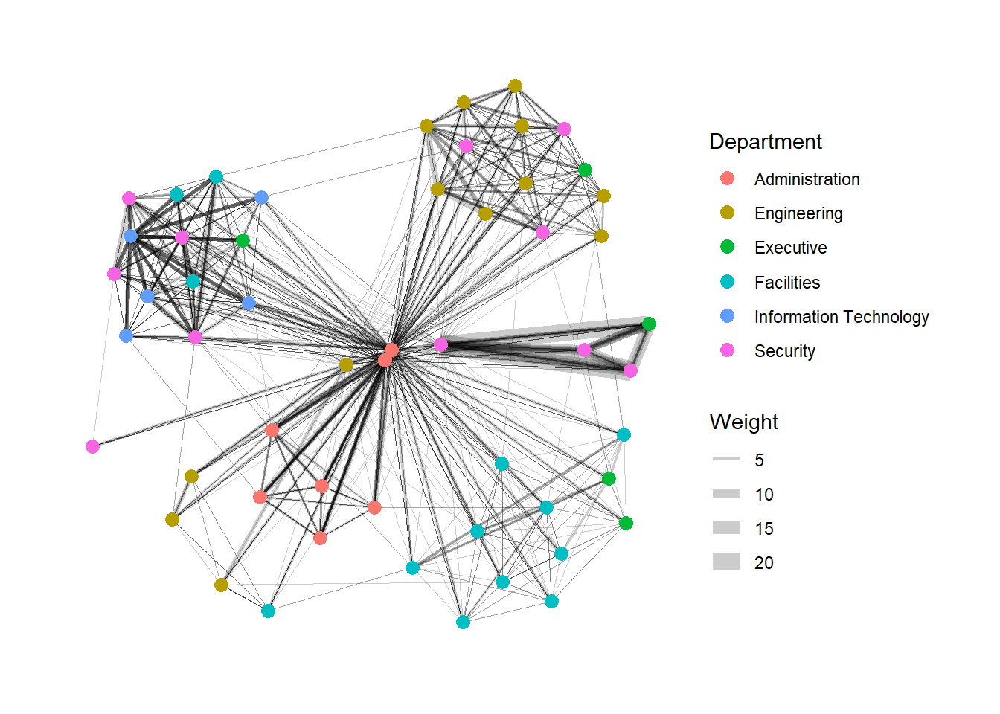
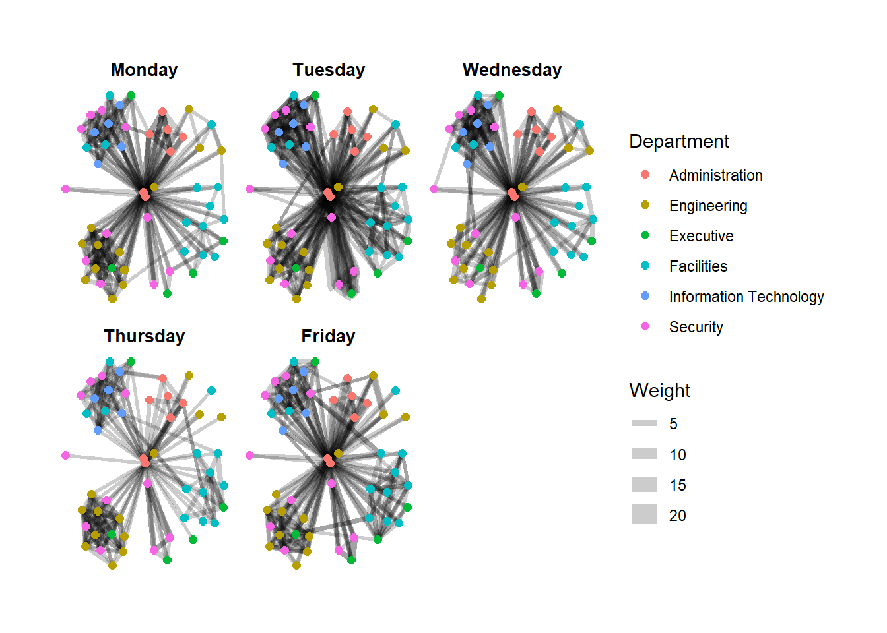
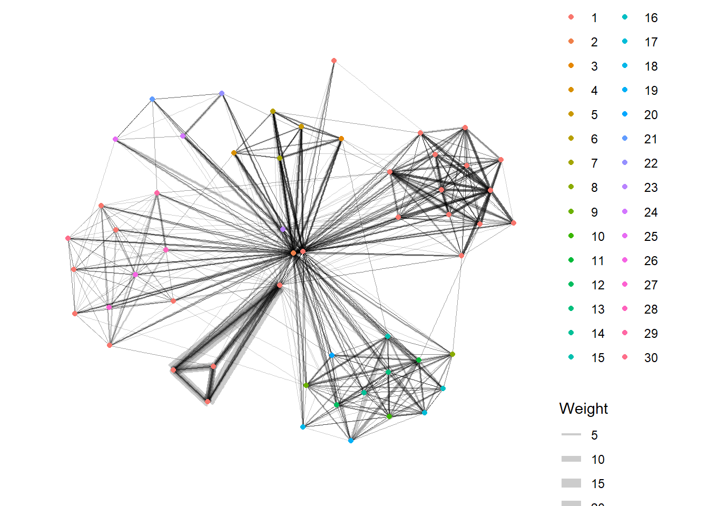

pacman::p_load(igraph,tidygraph,ggraph,
visNetwork,lubridate,clock,
tidyverse,graphlayouts)Hands-on Exercise 8: Network Data Visualisation and Analysis
1. Roadmap for studying

- Applicable to the data with nodes and edges, e.g. transactions among accounts, connections among websites or IP addresses, delivery services, emails among senders and receivers, etc.
2. Getting Started
2.1 Installing and launching R packages
In this hands-on exercise, four network data modelling and visualisation packages will be installed and launched. They are igraph, tidygraph, ggraph and visNetwork. Beside these four packages, tidyverse and lubridate, an R package specially designed to handle and wrangling time data will be installed and launched too.
3. The Data
The data sets used in this hands-on exercise is from an oil exploration and extraction company. There are two data sets. One contains the nodes data and the other contains the edges (also know as link) data.
- Nodes Data: Points or dots in a network which can represent almost anything, depending on what the network is about. Nodes data is essentially information about these points, such as their names, characteristics, and possibly their positions in space if the network has a geographical component.
- Edges Data: Lines that connect the nodes in a network, showing how they are related. Edges data includes information about these connections, like the type of relationship (friendship, road, data link, etc.), the strength or capacity of the connection (like the bandwidth of an internet connection), and sometimes the distance or cost associated with the connection.
3.1 The edges data
GAStech-email_edges-v2.csv which consists of two weeks of 9063 emails correspondances between 55 employees.

3.2 The nodes data
GAStech_email_nodes.csv which consist of the names, department and title of the 55 employees. The data should cover info of all the nodes of both side in one relationship.

3.3 Importing network data from files
Import GAStech_email_node.csv and GAStech_email_edges-v2.csv into RStudio environment by using read_csv() of readr package.
GAStech_nodes <- read_csv("data/GAStech_email_node.csv")
GAStech_edges <- read_csv("data/GAStech_email_edge-v2.csv")3.4 Reviewing the imported data
Next, we will examine the structure of the data frame using glimpse() of dplyr.
glimpse(GAStech_edges)Rows: 9,063
Columns: 8
$ source <dbl> 43, 43, 44, 44, 44, 44, 44, 44, 44, 44, 44, 44, 26, 26, 26…
$ target <dbl> 41, 40, 51, 52, 53, 45, 44, 46, 48, 49, 47, 54, 27, 28, 29…
$ SentDate <chr> "6/1/2014", "6/1/2014", "6/1/2014", "6/1/2014", "6/1/2014"…
$ SentTime <time> 08:39:00, 08:39:00, 08:58:00, 08:58:00, 08:58:00, 08:58:0…
$ Subject <chr> "GT-SeismicProcessorPro Bug Report", "GT-SeismicProcessorP…
$ MainSubject <chr> "Work related", "Work related", "Work related", "Work rela…
$ sourceLabel <chr> "Sven.Flecha", "Sven.Flecha", "Kanon.Herrero", "Kanon.Herr…
$ targetLabel <chr> "Isak.Baza", "Lucas.Alcazar", "Felix.Resumir", "Hideki.Coc…3.5 Wrangling time
The code chunk below will be used to perform the changes.
GAStech_edges <- GAStech_edges %>%
mutate(SentDate = dmy(SentDate)) %>%
mutate(Weekday=wday(SentDate,
label=TRUE,
abbr=FALSE))3.6 Reviewing the revised data fields
Table below shows the data structure of the reformatted GAStech_edges data frame.
glimpse(GAStech_edges)Rows: 9,063
Columns: 9
$ source <dbl> 43, 43, 44, 44, 44, 44, 44, 44, 44, 44, 44, 44, 26, 26, 26…
$ target <dbl> 41, 40, 51, 52, 53, 45, 44, 46, 48, 49, 47, 54, 27, 28, 29…
$ SentDate <date> 2014-01-06, 2014-01-06, 2014-01-06, 2014-01-06, 2014-01-0…
$ SentTime <time> 08:39:00, 08:39:00, 08:58:00, 08:58:00, 08:58:00, 08:58:0…
$ Subject <chr> "GT-SeismicProcessorPro Bug Report", "GT-SeismicProcessorP…
$ MainSubject <chr> "Work related", "Work related", "Work related", "Work rela…
$ sourceLabel <chr> "Sven.Flecha", "Sven.Flecha", "Kanon.Herrero", "Kanon.Herr…
$ targetLabel <chr> "Isak.Baza", "Lucas.Alcazar", "Felix.Resumir", "Hideki.Coc…
$ Weekday <ord> Monday, Monday, Monday, Monday, Monday, Monday, Monday, Mo…3.7 Wrangling attributes
A close examination of GAStech_edges data.frame reveals that it consists of individual e-mail flow records. This is not very useful for visualisation.
In view of this, we will aggregate the individual by date, senders, receivers, main subject and day of the week.
The code chunk:
GAStech_edges_aggregated <- GAStech_edges %>%
filter(MainSubject == "Work related") %>%
group_by(source,target,Weekday) %>%
summarise(Weight=n()) %>%
filter(source!=target) %>%
filter(Weight>1) %>%
ungroup()3.8 Reviewing the revised edges file
Table below shows the data structure of the reformatted GAStech_edges_aggregated data frame.
glimpse(GAStech_edges_aggregated)Rows: 1,456
Columns: 4
$ source <dbl> 1, 1, 1, 1, 1, 1, 1, 1, 1, 1, 1, 1, 1, 1, 1, 1, 1, 1, 1, 1, 1,…
$ target <dbl> 2, 2, 2, 2, 3, 3, 3, 3, 4, 4, 4, 4, 5, 5, 5, 5, 6, 6, 6, 6, 7,…
$ Weekday <ord> Monday, Tuesday, Wednesday, Friday, Monday, Tuesday, Wednesday…
$ Weight <int> 4, 3, 5, 8, 4, 3, 5, 8, 4, 3, 5, 8, 4, 3, 5, 8, 4, 3, 5, 8, 4,…4. Creating network objects using tidygraph
In this section, tidygraph packageyou will be used to create a graph data model. It provides a tidy API for graph/network manipulation. While network data itself is not tidy, it can be envisioned as two tidy tables, one for node data and one for edge data. tidygraph provides a way to switch between the two tables and provides dplyr verbs for manipulating them. Furthermore it provides access to a lot of graph algorithms with return values that facilitate their use in a tidy workflow.
Refer to these two articles for more information:
- Introducing tidygraph
- tidygraph 1.1 - A tidy hope
4.1 The tbl_graph object
Two functions of tidygraph package can be used to create network objects, they are:
tbl_graph()creates a new tbl_graph network object from nodes and edges data from scratch.as_tbl_graph()converts an existed network data and objects to a tbl_graph network. Below are network data and objects supported byas_tbl_graph()a node data.frame and an edge data.frame,
data.frame, list, matrix from base,
igraph from igraph, - network from network,
dendrogram and hclust from stats,
Node from data.tree,
phylo and evonet from ape, and
graphNEL, graphAM, graphBAM from graph (in Bioconductor).
Three elements in network data: - Nodes: a data frame with nodes info - Edges: a data frame with edges info - Direct: the relationship from node A to node B is different from the one from B to A in terms of frequency, weight,etc.
4.2 The dplyr verbs in tidygraph
activate()verb from tidygraph serves as a switch between tibbles for nodes and edges. All dplyr verbs applied to tbl_graph object are applied to the active tibble.N()function is used to gain access to the node data while manipulating the edge data. Similarly .E()will give you the edge data and .G()will give you the tbl_graph object itself.
4.3 Using tbl_graph() to build tidygraph data model
In this section, tbl_graph() of tidygraph package will be used to build an tidygraph’s network graph data.frame.
Before typing the codes, it’s recommended to review to reference guide of tbl_graph()
GAStech_graph <- tbl_graph(nodes=GAStech_nodes,
edges=GAStech_edges_aggregated,
directed =TRUE)4.4 Reviewing the output tidygraph’s graph object
GAStech_graph# A tbl_graph: 54 nodes and 1456 edges
#
# A directed multigraph with 1 component
#
# Node Data: 54 × 4 (active)
id label Department Title
<dbl> <chr> <chr> <chr>
1 1 Mat.Bramar Administration Assistant to CEO
2 2 Anda.Ribera Administration Assistant to CFO
3 3 Rachel.Pantanal Administration Assistant to CIO
4 4 Linda.Lagos Administration Assistant to COO
5 5 Ruscella.Mies.Haber Administration Assistant to Engineering Group Mana…
6 6 Carla.Forluniau Administration Assistant to IT Group Manager
7 7 Cornelia.Lais Administration Assistant to Security Group Manager
8 44 Kanon.Herrero Security Badging Office
9 45 Varja.Lagos Security Badging Office
10 46 Stenig.Fusil Security Building Control
# ℹ 44 more rows
#
# Edge Data: 1,456 × 4
from to Weekday Weight
<int> <int> <ord> <int>
1 1 2 Monday 4
2 1 2 Tuesday 3
3 1 2 Wednesday 5
# ℹ 1,453 more rows4.5 Changing the active object
The nodes tibble data frame is activated by default, but you can change which tibble data frame is active with the activate() function. Thus, if we wanted to rearrange the rows in the edges tibble to list those with the highest weight first, we could use activate() and then arrange().
The notion of an active tibble within a tbl_graph object makes it possible to manipulate the data in one tibble at a time.
For example,
GAStech_graph %>%
activate(edges) %>%
arrange(desc(Weight))# A tbl_graph: 54 nodes and 1456 edges
#
# A directed multigraph with 1 component
#
# Edge Data: 1,456 × 4 (active)
from to Weekday Weight
<int> <int> <ord> <int>
1 40 41 Tuesday 23
2 40 43 Tuesday 19
3 41 43 Tuesday 15
4 41 40 Tuesday 14
5 42 41 Tuesday 13
6 42 40 Tuesday 12
7 42 43 Tuesday 11
8 43 42 Wednesday 11
9 36 32 Wednesday 9
10 40 41 Monday 9
# ℹ 1,446 more rows
#
# Node Data: 54 × 4
id label Department Title
<dbl> <chr> <chr> <chr>
1 1 Mat.Bramar Administration Assistant to CEO
2 2 Anda.Ribera Administration Assistant to CFO
3 3 Rachel.Pantanal Administration Assistant to CIO
# ℹ 51 more rowsVisit the reference guide of activate() to find out more about the function.
5. Plotting Static Network Graphs with ggraph package
ggraph is an extension of ggplot2, making it easier to carry over basic ggplot skills to the design of network graphs.
As in all network graph, there are three main aspects to a ggraph’s network graph, they are:
5.1 Plotting a basic network graph
The code chunk below uses ggraph(), geom-edge_link() and geom_node_point() to plot a network graph by using GAStech_graph. Before getting started, it is advisable to read their respective reference guide at least once.
ggraph(GAStech_graph)+
geom_edge_link()+
geom_node_point()
5.2 Changing the default network graph theme
In this section, you will use theme_graph() to remove the x and y axes.
g <- ggraph(GAStech_graph)+
geom_edge_link(aes())+
geom_node_point(aes())
g+theme_graph()5.3 Changing the coloring of the plot
Furthermore, theme_graph() makes it easy to change the coloring of the plot.
g <- ggraph(GAStech_graph)+
geom_edge_link(aes(colour="grey50"))+
geom_node_point(aes(colour="grey40"))
g+theme_graph(background = "grey10",
text_colour = "white")
5.4 Working with ggraph’s layouts
ggraph support many layout for standard used, they are: star, circle, nicely (default), dh, gem, graphopt, grid, mds, spahere, randomly, fr, kk, drl and lgl. Figures below and on the right show layouts supported by ggraph().


5.5 Fruchterman and Reingold layout
The code chunks below will be used to plot the network graph using Fruchterman and Reingold layout.
g <- ggraph(GAStech_graph,
layout = "fr")+
geom_edge_link(aes())+
geom_node_point(aes())
g+theme_graph()
5.6 Modifying network nodes
Modify nodes: size, colour, defination of nodes.
In this section, I will colour each node by referring to their respective departments.
g <- ggraph(GAStech_graph,
layout = "nicely")+
geom_edge_link(aes())+
geom_node_point(aes(colour=Department,
size=3))
g+theme_graph()
5.7 Modifying edges
Modify edges: thickness, colour.
In the code chunk below, the thickness of the edges will be mapped with the Weight variable.
g <- ggraph(GAStech_graph,
layout = "nicely")+
geom_edge_link(aes(width=Weight),
alpha=0.2)+
scale_edge_width(range = c(0.1,5))+
geom_node_point(aes(colour=Department),
size=3)
g+theme_graph()
6. Creating facet graphs
Another very useful feature of ggraph is faceting. In visualising network data, this technique can be used to reduce edge over-plotting in a very meaning way by spreading nodes and edges out based on their attributes. In this section, you will learn how to use faceting technique to visualise network data.
There are three functions in ggraph to implement faceting, they are:
- facet_nodes() whereby edges are only draw in a panel if both terminal nodes are present here,
- facet_edges() whereby nodes are always drawn in a panels even if the node data contains an attribute named the same as the one used for the edge facetting, and
- facet_graph() faceting on two variables simultaneously.
6.1 Working with facet_edges()
In the code chunk below, facet_edges() is used.
set_graph_style()
g <- ggraph(GAStech_graph,
layout = "nicely")+
geom_edge_link(aes(width=Weight),
alpha=0.2)+
geom_node_point(aes(colour=Department),
size=2)
g+facet_edges(~Weekday)
The code chunk below uses theme() to change the position of the legend.
set_graph_style()
g <- ggraph(GAStech_graph,
layout = "nicely")+
geom_edge_link(aes(width=Weight),
alpha=0.2)+
scale_edge_width(range=c(0.1,5))+
geom_node_point(aes(colour=Department),
size=2)+
theme(legend.position = "bottom")
g+facet_edges(~Weekday)
6.2 A framed facet graph
The code chunk below adds frame to each graph.
set_graph_style()
g <- ggraph(GAStech_graph,
layout = "nicely")+
geom_edge_link(aes(width=Weight),
alpha=0.2)+
scale_edge_width(range = c(0.1,5))+
geom_node_point(aes(colour=Department),
size=2)
g+facet_edges(~Weekday)+
th_foreground(foreground = "grey80",
border = TRUE)+
theme(legend.position = "bottom")
6.3 Working with facet_nodes()
In the code chunk below, facet_nodes() is used.
set_graph_style()
g <- ggraph(GAStech_graph,
layout = "nicely")+
geom_edge_link(aes(width=Weight),
alpha=0.2)+
scale_edge_width(range=c(0.1,5))+
geom_node_point(aes(colour=Department),
size=2)
g+facet_nodes(~Department)+
th_foreground(foreground = "grey80",
border = TRUE)+
theme(legend.position = "bottom")
7. Network Metrics Analysis
7.1 Computing centrality indices
Centrality measures are a collection of statistical indices use to describe the relative important of the actors are to a network. There are four well-known centrality measures, namely: degree, betweenness, closeness and eigenvector.
Refer to Chapter 7: Actor Prominence of A User’s Guide to Network Analysis in R* to gain better understanding of theses network measures.
To show centrality of each nodes by differentiating the size.
g <- GAStech_graph %>%
mutate(betweenness_centrality = centrality_betweenness()) %>%
ggraph(layout = "fr") +
geom_edge_link(aes(width=Weight),
alpha=0.2) +
scale_edge_width(range = c(0.1, 5)) +
geom_node_point(aes(colour = Department,
size=betweenness_centrality))
g + theme_graph()
7.2 Visualizing network metrics
t is important to note that from ggraph v2.0 onward tidygraph algorithms such as centrality measures can be accessed directly in ggraph calls. This means that it is no longer necessary to precompute and store derived node and edge centrality measures on the graph in order to use them in a plot.
g <- GAStech_graph %>%
ggraph(layout="fr")+
geom_edge_link(aes(width=Weight),
alpha=0.2)+
scale_edge_width(range=c(0.1,5))+
geom_node_point(aes(colour=Department,
size= centrality_betweenness()))
g+theme_graph()
7.3 Visualizing community
tidygraph package inherits many of the community detection algorithms imbedded into igraph and makes them available to us, including Edge-betweenness (group_edge_betweenness), Leading eigenvector (group_leading_eigen), Fast-greedy (group_fast_greedy), Louvain (group_louvain), Walktrap (group_walktrap), Label propagation (group_label_prop), InfoMAP (group_infomap), Spinglass (group_spinglass), and Optimal (group_optimal). Some community algorithms are designed to take into account direction or weight, while others ignore it.
For more about community detection, refer to Group nodes and edges based on community structure.
In the code chunk below group_edge_betweenness() is used.
g <- GAStech_graph %>%
mutate(community = as.factor(group_edge_betweenness(weights=Weight, directed=TRUE))) %>%
ggraph(layout="fr")+
geom_edge_link(aes(width=Weight),
alpha=0.2)+
scale_edge_width(range=c(0.1,5))+
geom_node_point(aes(colour=community))
g+theme_graph()
8. Building Interactive Network Graph with visNetwork
visNetwork() is a R package for network visualization, using vis.js javascript library.
visNetwork() function uses a nodes list and edges list to create an interactive graph.
- The nodes list must include an “id” column, and the edge list must have “from” and “to” columns.
- The function also plots the labels for the nodes, using the names of the actors from the “label” column in the node list.
The resulting graph is fun to play around with.
- You can move the nodes and the graph will use an algorithm to keep the nodes properly spaced.
- You can also zoom in and out on the plot and move it around to re-center it.
8.1 Data Preparation
Before we can plot the interactive network graph, we need to prepare the data model by using the code chunk below.
GAStech_edges_aggregated <- GAStech_edges %>%
left_join(GAStech_nodes, by=c("sourceLabel"="label")) %>%
rename(from=id) %>%
left_join(GAStech_nodes, by=c("targetLabel"="label")) %>%
rename(to=id) %>%
filter(MainSubject=="Work related") %>%
group_by(from,to) %>%
summarise(weight=n()) %>%
filter(from!=to) %>%
filter(weight>1) %>%
ungroup()8.2 Plotting the first interactive network graph
The code chunk below will be used to plot an interactive network graph by using the data prepared.
visNetwork(GAStech_nodes,
GAStech_edges_aggregated)8.3 Working with layout
In the code chunk below, Fruchterman and Reingold layout is used.
visNetwork(GAStech_nodes,
GAStech_edges_aggregated) %>%
visIgraphLayout(layout="layout_with_fr")Visit Igraph to find out more about visIgraphLayout’s argument.
8.4 Working with visual attributes - Nodes
visNetwork() looks for a field called “group” in the nodes object and colour the nodes according to the values of the group field.
The code chunk below rename Department field to group.
GAStech_nodes <- GAStech_nodes %>%
rename(group=Department)When we rerun the code chunk below, visNetwork shades the nodes by assigning unique colour to each category in the group field.
visNetwork(GAStech_nodes,
GAStech_edges_aggregated) %>%
visIgraphLayout(layout="layout_with_fr") %>%
visLegend() %>%
visLayout(randomSeed = 123)8.5 Working with visual attributes - Edges
In the code run below visEdges() is used to symbolise the edges.
- The argument arrows is used to define where to place the arrow.
- The smooth argument is used to plot the edges using a smooth curve.
visNetwork(GAStech_nodes,
GAStech_edges_aggregated) %>%
visIgraphLayout(layout="layout_with_fr") %>%
visEdges(arrows="to",
smooth=list(enabled=TRUE,
type="curvedCW")) %>%
visLegend() %>%
visLayout(randomSeed = 123)Visit Option to find out more about visEdges’s argument.
8.6 Interactivity
In the code chunk below, visOptions() is used to incorporate interactivity features in the data visualisation.
- The argument highlightNearest highlights nearest when clicking a node.
- The argument nodesIdSelection adds an id node selection creating an HTML select element.
visNetwork(GAStech_nodes,
GAStech_edges_aggregated) %>%
visIgraphLayout(layout="layout_with_fr") %>%
visOptions(highlightNearest = TRUE,
nodesIdSelection = TRUE) %>%
visLegend() %>%
visLayout(randomSeed = 123)Visit Option to find out more about visOption’s argument.